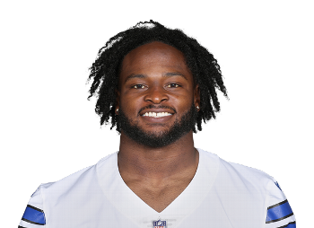

BALL KEEP
Dynasty · Redraft
Player File · RB DAL

Javonte Williams
RB · DAL · 26 · North Carolina
Keep avg73.07
# Boards26
BK Value3,803
Spread48–81
The Keep#71BK 3,803
The Board#34BK 5,732
SF Redraft#55BK 4,504
STD#31BK 5,951
The tape
Javonte Williams' 2025-26 Cowboys highlights are the reason redraft invited him back to the 30s. Yates 30th, our standard board 25th. He looks like a back again: inside runs, enough burst, a passing-game role. That is all redraft asked for.
Dynasty is colder because the injury history and the age curve do not scream 2028 RB1. If you have him on a contender, you start him in the right matchups. If you have him on a rebuild, you sell him to Dallas-stacking managers who watched the highlights at 1 a.m.
Plus
- Yates PPR 30th / STD 25th — 2025 Cowboys tape put him back on the RB2 map.
- Receiving chops plus Dallas' scoring environment is a PPR help.
Minus
- Off The Keep top 50 — the post-injury career is a redraft story more than a dynasty one.
- Cowboys backfield and offensive noise can turn RB2 weeks into RB4 weeks.
Board graph
Spread 48–81 · 26 sources
Every Board
Spread 48–81 · 26 sources
| Source | Rank |
|---|---|
| ESPN (Karabell) | 48 |
| PFN (Katz/Soppe) | 60 |
| Dynasty Nerds | 67 |
| CBS Sports | 68 |
| Fantasy Alarm | 68 |
| The Athletic | 76 |
| Yahoo Fantasy | 76 |
| Rotoworld | 76 |
| Fantasy Life | 76 |
| Sleeper Superflex | 76 |
| Underdog ADP | 76 |
| 4for4 | 76 |
| FFToday | 76 |
| Contender desk | 76 |
| DLF ADP mix | 76 |
| KeepTradeCut SF | 77 |
| Fantasy Footballers | 78 |
| Establish The Run | 78 |
| numberFire | 78 |
| PlayerProfiler | 78 |
| Dynasty Trade Calculator | 78 |
| Rebuild desk | 78 |
| Footballguys | 79 |
| FantasyPros ECR | 80 |
| DLF Superflex | 81 |
| PFF Dynasty | 81 |
Tape · 2025 season
Javonte Williams || 2025-2026 Dallas Cowboys Highlights
All player pages · The Keep · The Board · Recent deals · Hot 'n' Cold · BK News · Trade calculator